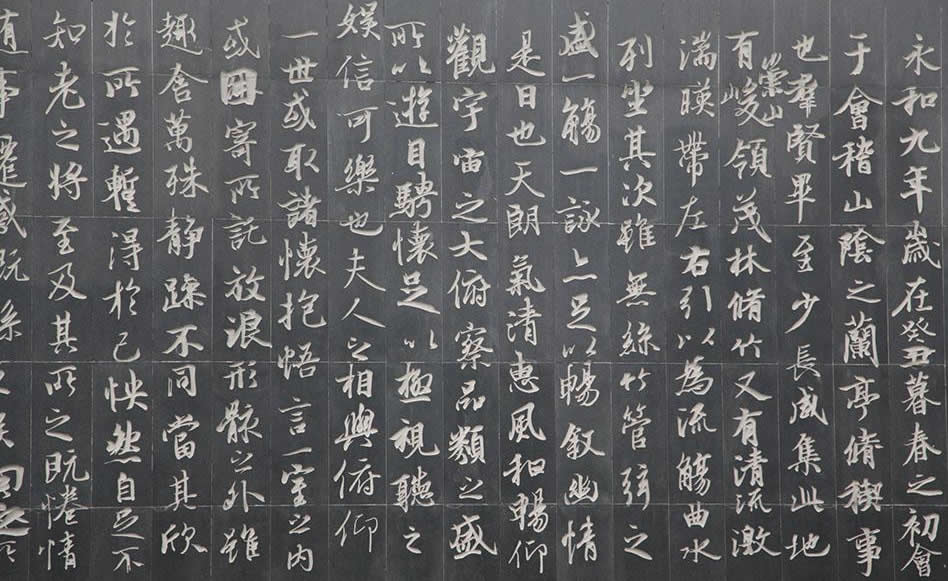

兰亭集序
2018-6-19
《兰亭集序》又名《兰亭宴集序》、《兰亭序》、《临河序》、《禊序》和《禊贴》。东晋穆帝永和九年（公元353年）三月三日，王羲之与谢安、孙绰等四十一位军政高官，在山阴（今浙江绍兴）兰亭“修禊”，会上各人做诗，王羲之为他们的诗写的序文手稿。《兰亭序》中记叙兰亭周围山水之美和聚会的欢乐之情，抒发作者对于生死无常的感慨。
晋穆帝永和九年（353年）农历三月初三，“初渡浙江有终焉之志”的王羲之，曾在会稽山阴的兰亭（今绍兴城外的兰渚山下），与名流高士谢安、孙绰等四十一人举行风雅集会。与会者临流赋诗，各抒怀抱，抄录成集，大家公推此次聚会的召集人，德高望重的王羲之写一序文，记录这次雅集，即《兰亭集序》。
这篇序言疏朗简净而韵味深长，突出地代表了王羲之的散文风格。且其造语玲珑剔透，琅琅上口。是古代骈文的精品。《兰亭集序》在骈文的几个方面都有所长。在句法上，对仗整齐，句意排比，如“群贤毕至，少长咸集”，“仰观宇庙之大。俯察品类之盛”，“或取诸怀抱，晤言一室之内；或因寄所托，放浪形骸之外”，两两相对，音韵和谐，无斧凿之痕，语言清新、朴素自然。属于议论部分的文字也非常简沽，富有表现力，在用典上也只用“齐彭殇”和“修楔事”这样浅显易储的典故，这样朴素的行文与东晋对代雕章琢句，华而不实的文风形成鲜明对照。这篇文章体现了王羲之积极入世的人生观，和老庄学说主张的无为形成了鲜明的对比。

东晋穆帝永和九年（公元353年）三月三日，王羲之与谢安、孙绰等四十一人，在山阴之兰亭修“拔禊”之礼，举行盛大的风雅。当日，天朗气清，惠风和畅，名士们饮酒赋诗，五十一岁的王羲之用蚕茧纸，鼠须笔，兴乐而书，完成一篇《兰亭诗序》。《兰亭序》手稿共二十八行，三百二十四字，遒媚飘逸，纵横变化，气韵完美，雄秀之气，出于天然。当时王羲之已醉，下笔如有神助，醒后自己也感惊异，他日更书数十本，比原稿终莫能及。唐初为太宗所得，尊为“天下第一行书”，命虞世南、欧阳询、褚遂良等钩摹数本，以冯承素为首的弘文馆拓书人也奉命将原迹摹成了副本。唐太宗把摹本分赐亲贵近臣，真迹则被他作为殉葬品，埋入昭陵。现在流传的冯承素摹本，存故宫博物院，上面钤有“神龙”（唐中宗年号）小印，是断为唐摹的一个铁证。
金圣叹《天下才子必读书》卷九：“此文一意反复生死之事甚疾，现前好景可念，更不许顺口说有妙理妙语，真古今第一情种也。” 李兆洛《骈体文钞》卷二十一：“雅人深致，玩其抑扬之趣。” 吴楚材、吴调侯《古文观止》卷七：“通篇着眼在死生二字。只为当时士大夫务清谈，鲜实效。一死生而齐彭疡，无经济大略，故触景兴怀，俯仰若有余病。但逸少旷达人，故虽苍凉感叹之中，自有无穷逸趣。”
浦起龙《古文眉诠》卷四十二：非止序禊事也，序诗意也。修短死生，皆一时诗意所感，故其言如此。笔情绝俗，高出选体。余诚《重汀古文释义新编》卷七：因游宴之乐，写人生死之可悲，则兰亭一会，固未可等诸寻常小集。而排斤当日竟尚清谈；倾惑朝廷者之意，亦寓言下。林西仲谓古人游览之文，亦不苟作如此。信非诬也。至其文情之高旷，文致之轻松，更难备述。